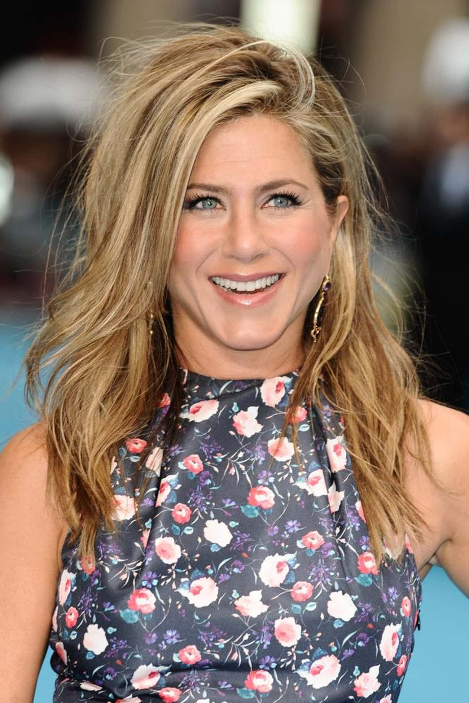
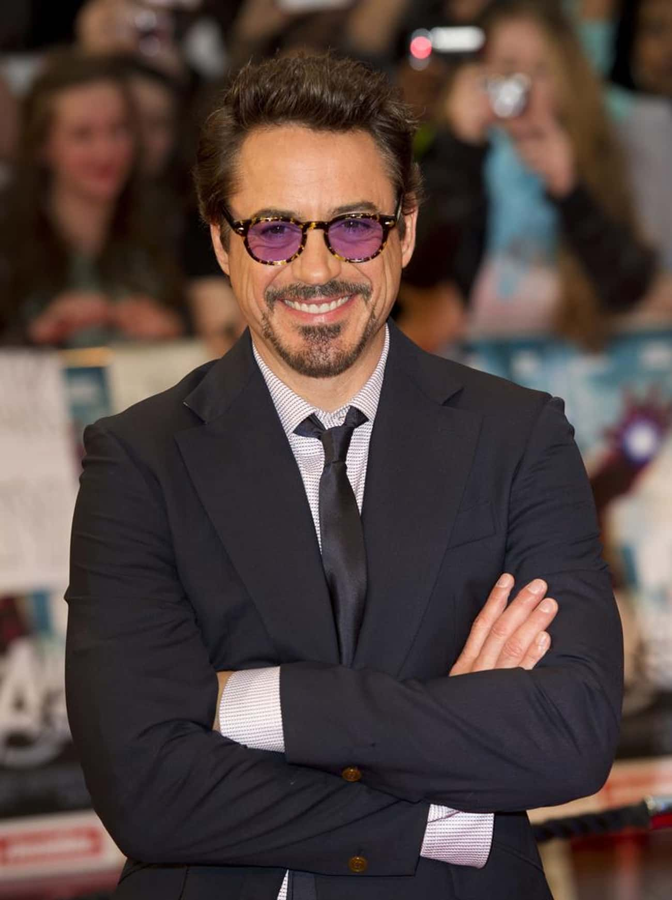

Many famous actors, comedians and musicians are believed to be ENFPs (Extraverted Intuitive Feeling Perceiving). ENFPs are known to be warm, enthusiastic and charming. They are often free spirits who excel at motivating others. However, ENFPs can risk turning their motivating qualities into manipulative behavior if they aren't careful.
Who is the most famous ENFP? Jennifer Aniston tops our list. Jennifer Aniston is warm, charming, and great at transitioning between projects. Likewise, "independent, charming, and motivating" are three words that best describe the ENFP ska princess: Gwen Stefani. Actress Alicia Silverstone has always worn many hats including actress, mother, activist, and cookbook writer. This versatility lends her to the ENFP personality type.
 